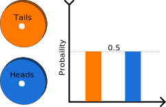
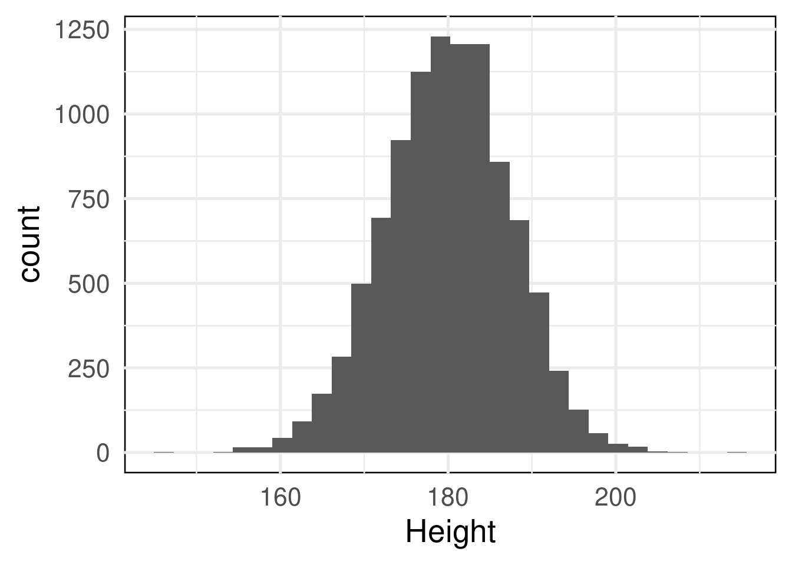

A few words on statistics in general.
So what is statistics even? The answer might differ depending on who you ask. I am a biologist - and my understanding of statistics reflects this. I acknowledge that the theory presented in this little presentation is simplified compared to what an actual statistician would have given, but if the goal is to use statistics, this might not be all bad. I will try my best to give a different take on how to understand statistics, than what I have seen in the statistics courses that I have taken. In as brief a way as possible.
A brief history of statistics.
The name statistics originate (according to Wikipedia) from states measuring different economic patterns. It uses the tools of mathematics to describe “real world” scenarios. Two overall parts of statistics are of particular importance: probability and statistical inference. The two are closely connected.
Probability and statistical inference
Probability theory describes the likeliness of an outcome. In more formal terms probability theory wishes to attribute probability to outcomes expressed in a sample space. A sample space is the set of possible outcomes, i.e. heads and tails for flipping a coin. Statistical inference uses mathematical tools to estimate the properties of distribution of probability. A distribution of probability is how probabilites are assigned to outcomes. I can seem counter intuitive at first. Some examples make sense, i.e. the probability of a coin.

Other times it is less clear that we are working with probabilities. A good example is height. On the right the height of 10000 people is illustrated as a histogram. We intuitively know that is more common to be “normal” height. I.e. the probability of this is higher. However, the concept is a little more abstract than in the case of the coin.

Different natural phenomenons can be described using different statistical distributions. A lot of work has gone into finding different probability distributions.
Distributions:
A lot of work has gone into finding different probability distributions. We need probabilty distributions to attempt to explain the world around us. It has turned out that a lot of things we measure (variables) seem to behave in the same ways - i.e. they follow similar distributions. The distributions are intrinsically linked to the type of data it describes. Data fall into two overall categories: Discrete and Continuous. An example of discrete data is our coin example above. Something that falls within definite categories. Often times with no numerical relationship with each other - tails does not have a numerical distance to heads. Continuous distributions are numbers such as height that exist on a number line.
Common for all distributions is that they can be mathematically expressed. This means each one comes with a number of assumptions. As such, this is not a problem. The problem arise, when we as researchers use a particular distribution to describe an outcome where the assumptions are violated. When the assumptions are violated, the underlying statistical inference we draw regarding the underlying natural phenomenon will be wrong. For a review of some of the common distributions see the distributions tab above.
Statistical modelling:
Statistical modelling uses some of the concepts described above to model real world phenomena.